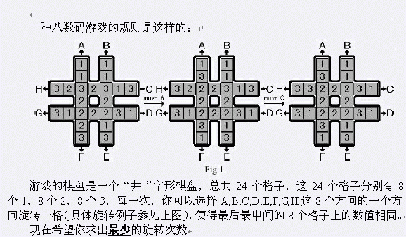
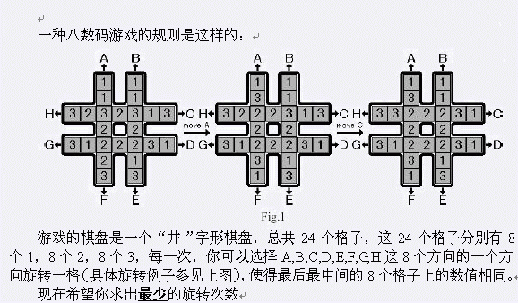

 游戏的棋盘是一个“井”字形棋盘，总共24个格子，这24个格子分别有8个1，8个2，8个3，每一次，你可以选择A,B,C,D,E,F,G,H这8个方向的一个方向旋转一格（具体旋转例子参见上图），使得最后最中间的8个格子上的数值相同。 现在希望你求出最少的旋转次数
| F.A.Qs | Home | Discuss | ProblemSet | Status | Ranklist | Contest | 入门OJ | ModifyUser Xeonacid | Logout | 捐赠本站 |
|---|
| F.A.Qs | Home | Discuss | ProblemSet | Status | Ranklist | Contest | 入门OJ | ModifyUser Xeonacid | Logout | 捐赠本站 |
|---|
 游戏的棋盘是一个“井”字形棋盘，总共24个格子，这24个格子分别有8个1，8个2，8个3，每一次，你可以选择A,B,C,D,E,F,G,H这8个方向的一个方向旋转一格（具体旋转例子参见上图），使得最后最中间的8个格子上的数值相同。 现在希望你求出最少的旋转次数
本题为多组数据 每个数据为一行，共24个数，从上到下从左到右依次描述每一个格子。 以0表示结束
输出为一行，若干个由”A”..”H”组成的字母，表示一组解的方案，如果有多组可行解，你需要输出字典序最小的解。